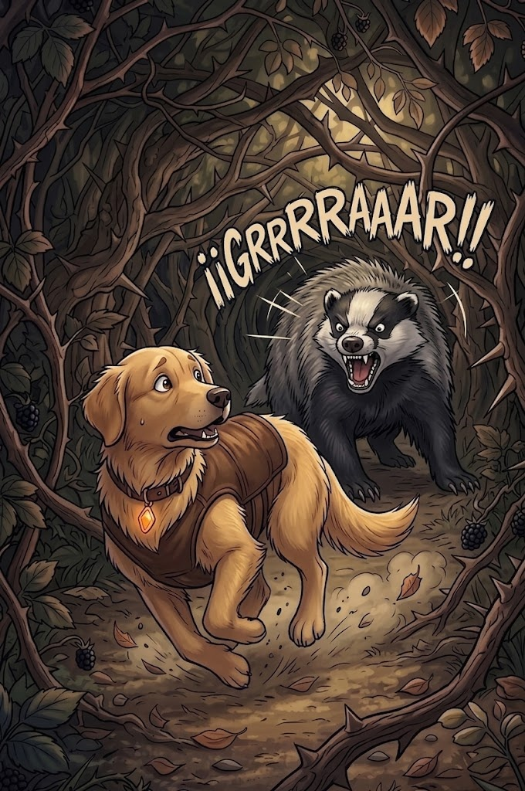

3/3
Camino Final: ¡Un Susto Inesperado!
🔊 Narración:
Nami ladra con fuerza mostrando los colmillos. Pero el tejón no se asusta, ¡se despierta de muy mal humor y le gruñe de vuelta!.
Nami tiene que dar media vuelta, meter la cola entre las patas y correr a toda velocidad de regreso al inicio del bosque. Tendrá que buscar otra ruta.
♦ ───── ♦
¡Nami no se rendirá!
Ayúdala a buscar otro camino.